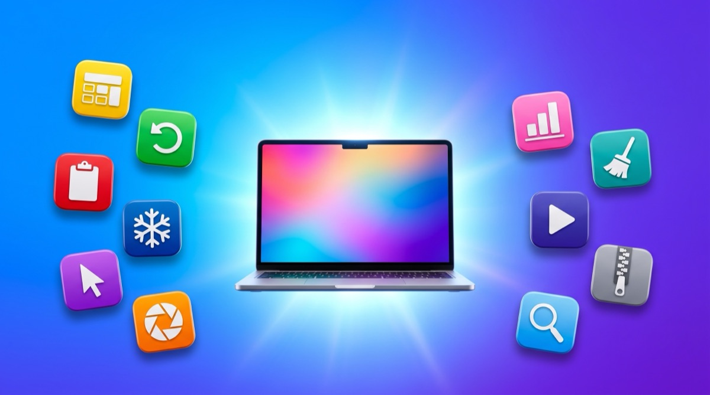
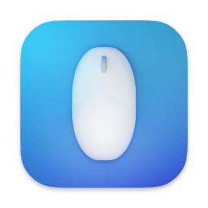
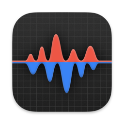
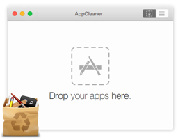

Superdock
SuperdockBest Mac apps for 8GB of RAM

Short answer. On a base-model Mac the apps you add matter more than the apps you run. The five that give back the most for the least memory are Rectangle for window snapping, AltTab for window switching, Maccy for clipboard history, Ice for the menu bar and LinearMouse for a normal mouse. All five are free, all five are native, and all five together cost less memory than one Electron app sitting idle.
A disclosure before anything else. I make one of the apps on this list, Superdock, and it is the only paid one here. Discount my opinion of it as hard as you think is fair. The other ten are free, I use all of them, and several of them do things Superdock does not.
Why this list is different
Most Mac app lists ignore memory entirely. That is fine on a 32GB machine. On an 8GB Mac it is the whole problem, because you cannot add memory to an Apple silicon Mac later. What you bought is what you have for the life of the machine.
So the question is not which app has the most features. It is which apps earn the memory they take.
Scope. Utilities and system tools only. Not covered: browsers, editors, creative software, or anything where the heavy app is the actual work. If you need Photoshop you need Photoshop, and no list can help.
The real enemy is Electron, not the number of apps
An Electron app bundles an entire copy of Chromium to draw its interface. That is why a chat client can idle at several hundred megabytes while doing nothing. A native Mac app written in Swift or Objective-C draws with the frameworks already loaded in memory by the system, so it starts from near zero.
The practical consequence is that ten native utilities can cost less than one Electron app. Counting apps is the wrong instinct. Counting frameworks is the right one.
The apps

Rectangle
Snaps windows to halves, thirds and quarters with keyboard shortcuts, which is the single feature Windows switchers miss most. It is a small Swift app that does one job.
Install first. If you install nothing else from this list, install this.
AltTab
Gives macOS a real window switcher. Hold Option, press Tab, and every open window appears with a thumbnail rather than one icon per app.
Turn thumbnails off in its settings if you want it lighter still. It works fine showing icons alone.

Maccy
Clipboard history in the menu bar. It deliberately does one job and has no sync, no accounts and no cloud, which is why it stays small.
The lightest clipboard manager worth using. Paste and similar apps do more and cost more.

Ice
Hides menu bar icons you rarely need behind a divider. Matters more on a MacBook with a notch, where the usable menu bar is genuinely short.
The free answer to what Bartender charges for. Bartender is more polished; Ice is enough.

LinearMouse
Fixes scrolling and pointer acceleration for third-party mice. macOS tunes both for Apple hardware, and a normal mouse feels wrong until you change it.
Essential on a Mac mini or any Mac driven with a regular mouse rather than a trackpad.
Shottr
Screenshots with annotation, scrolling capture, measurement and text recognition. Written natively and noticeably faster than the alternatives.
CleanShot X is the better-known choice and does more. Shottr is lighter and free, which is the trade this list cares about.

Stats
Puts memory, CPU and disk readings in the menu bar. On an 8GB machine, seeing memory pressure before the Mac starts swapping is genuinely useful.
Enable only the readings you want. Every extra module is another thing being sampled.

AppCleaner
Removes an app along with the support files, caches and preferences it scattered around your disk. Drag the app in, confirm the list, done.
Not a memory tool, a disk one. It belongs here because a base-model Mac usually has a small disk too.
IINA
A native video player that handles the formats QuickTime refuses. Written in Swift, and it looks like a Mac app rather than a port.
VLC plays more obscure files. IINA is the one you want open on a small machine.
Keka
Creates and extracts every archive format you will meet, including RAR and 7z which macOS cannot open on its own.
Runs only while it is working. Nothing sits resident between jobs.

Raycast
Replaces Spotlight with a launcher that also does clipboard history, window management, snippets and calculations. One app absorbing four is a real memory saving.
The free tier is the whole product for most people. If you install this you may not need Maccy above.

Superdock
Mine, so judge this entry hardest. It replaces the Dock rather than decorating it, which is a bigger commitment than anything else on this list. The memory argument for it is narrow and specific: if you currently run several Chrome instances with separate data folders to get one Dock icon per profile, that costs real memory. I measured one Chrome with three profiles and about 35 tabs at 1.67 GB across 11 processes, and the same three profiles as separate instances at about 4.6 GB across 33 processes.
Only worth it if you run several Chrome profiles. If you do not, the free part of the app is the whole product and you can ignore the paid feature entirely.
At a glance
| App | Cost | Native | Verdict |
|---|---|---|---|
| Rectangle | Free | Yes | Install first, no exceptions |
| AltTab | Free | Yes | Best if you came from Windows |
| Maccy | Free | Yes | Best if you want clipboard history and nothing else |
| Ice | Free | Yes | Best if you have a notch |
| LinearMouse | Free | Yes | Best if you use a third-party mouse |
| Shottr | Free tier | Yes | Best if CleanShot X feels heavy |
| Stats | Free | Yes | Best for watching memory pressure |
| AppCleaner | Free | Yes | Best for reclaiming disk, not memory |
| IINA | Free | Yes | Best everyday video player |
| Keka | Free | Yes | Best for RAR and 7z |
| Raycast | Free tier | Yes | Best if you want one app instead of four |
| Superdock | $7.99 once | Yes | Best only if you run several Chrome profiles |
What to skip on 8GB
Being specific is more useful than being polite. On a base-model Mac these are the categories that hurt: Electron chat clients left running all day, cloud storage apps that index continuously, antivirus software you did not need on a Mac, and anything advertising itself as a suite. One suite usually costs more than this entire list.
The honest ceiling is that no utility fixes a shortage of memory. These apps stay out of the way so the memory goes to the work. If your actual workload needs 16GB, it needs 16GB.
Frequently asked questions
How much memory do these apps use in total?
Each is a small native app, and in normal use the whole set sits well under what a single Electron application uses idle. Exact numbers vary with your machine and settings, so watch Activity Monitor or Stats rather than trusting any published figure, including mine.
Is 8GB enough for a Mac in 2026?
For browsing, mail, documents and light development, yes, particularly on Apple silicon where memory is unified and compression is aggressive. It becomes painful with many browser tabs, virtual machines, or video work. The trouble is you cannot add memory later.
Why do native apps use less memory than Electron apps?
An Electron app ships its own copy of Chromium to draw its interface. A native app draws using frameworks macOS has already loaded, so it starts from close to zero rather than from a browser engine.
Will a Dock replacement slow down an 8GB Mac?
It should not, since it draws a row of icons and watches for window changes. Superdock does add Accessibility polling, which is real work. If you do not have a problem it solves, do not install it.
Do I need all of these?
No. Rectangle and AltTab give most people the largest improvement. Add the rest only when you notice the gap each one fills.
Download free Superdock is free to download. The dock, window previews, the switcher and multi-display support are all free. Chrome profile icons: 14 days free, then $7.99 once. macOS 14 or later.
Continue reading

Independent macOS developer and the author of Superdock. I switched to a Mac from Windows, lost the per profile taskbar buttons I relied on, and built the dock I wanted instead. I write these guides from daily use of the apps in them, and I answer the support email myself.